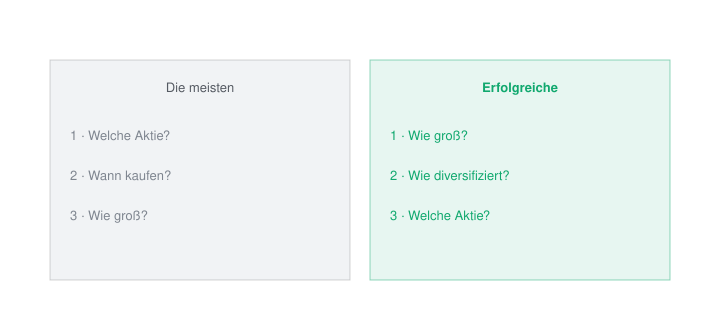
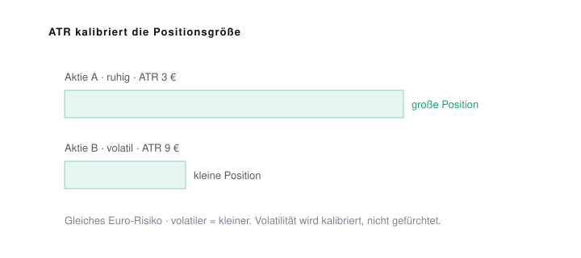
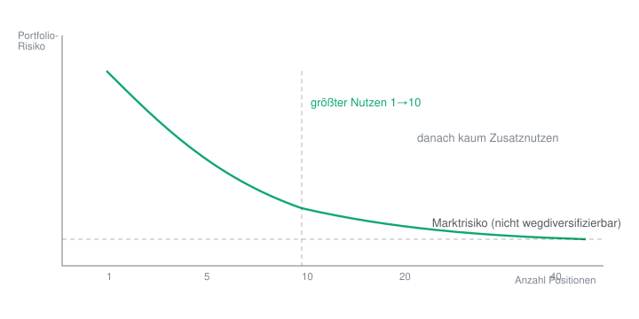
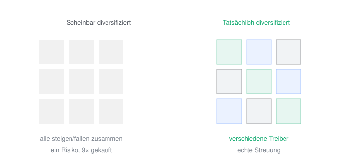

Warum dieses Modul vor dem Einstieg steht
In der Nummerierung ist Risikomanagement Modul 5. In der Wichtigkeit ist es das erste. Deshalb behandeln wir es in der Praxis vor jedem konkreten Einstieg.
Der Grund ist die Mathematik aus Modul 1: Verluste sind konvex. Ein Verlust von 50 % erfordert einen Gewinn von 100 %, um ihn auszugleichen. Renditen multiplizieren sich, sie addieren sich nicht. Daraus folgt eine Rangordnung, die dem Instinkt widerspricht:

Die Aktienauswahl bestimmt deine Rendite in den Jahren, in denen du recht hast. Das Risikomanagement bestimmt, ob du in den Jahren, in denen du falsch liegst, noch im Spiel bist. Und da du dich — siehe Erwartungswert, Modul 1 — regelmäßig irren wirst, entscheidet das zweite über das erste.
Lernziele
Nach diesem Modul kannst du:
- die Positionsgröße aus einem definierten Risiko pro Trade berechnen — die Kernrechnung des aktiven Anlegers;
- Diversifikation so gestalten, dass sie Risiko senkt, ohne in „Diworsification" zu kippen;
- ein Depot strukturieren — nach Positionszahl, Korrelation und Gewichtung;
- Stop-Loss sinnvoll (und volatilitätsbewusst über ATR) einsetzen — und wissen, wann keiner besser ist;
- das Chance-Risiko-Verhältnis vor jedem Trade quantifizieren und mit der Sicherheitsmarge verbinden;
- das Portfolio-Risiko als Ganzes betrachten, inklusive versteckter Klumpenrisiken durch Korrelation;
- deinen maximalen Depotverlust (Drawdown) vorab festlegen und in konkrete Regeln übersetzen;
- Volatilität korrekt einordnen — als Kalibrierungsgröße, nicht als Feind.
5.1Positionsgröße — die Kernrechnung
Der Paradigmenwechsel
Die Frage lautet nicht: „Wie viel Geld will ich in diese Aktie stecken?"
Die Frage lautet: „Wie viel Geld bin ich bereit zu verlieren, wenn diese These vollständig scheitert?"
Aus der Antwort auf die zweite Frage ergibt sich die Positionsgröße — nicht umgekehrt. Diese Umkehrung — Risiko zuerst, Position zuletzt — trägt den Rest dieses Moduls.
Die 1-%-Regel (Risiko pro Trade)
Das professionelle Fundament: Riskiere pro Einzelposition nicht mehr als 1 % (maximal 2 %) deines Gesamtdepots.
„Riskieren" meint hier nicht den investierten Betrag, sondern den Betrag, den du verlierst, wenn dein Stop bzw. dein Falsifikationsniveau erreicht wird.
Rechenbeispiel 1 — die Grundrechnung
Depot: 100.000 €
Risiko pro Trade: 1 % → 1.000 € maximaler Verlust
Einstiegskurs: 200 €
Falsifikationsniveau: 170 € (−15 %) — hier wäre die These widerlegt
(nicht: normale Schwankung)
Risiko pro Aktie: 200 − 170 = 30 €
Anzahl Aktien = 1.000 € / 30 € = 33 Aktien
Positionsgröße = 33 × 200 € = 6.600 € (6,6 % des Depots)
Falls sich deine These fundamental als falsch erweist und du dann bei 170 € verkaufst, verlierst du 33 × 30 € = 990 € ≈ 1 % des Depots. Genau wie geplant.
Die 170 € sind nicht der Kurs, bei dem du „automatisch bei −15 % verkaufst". Als langfristiger Anleger verkaufst du nicht, nur weil der Kurs fällt — ein Rückgang bei intakter These macht die Aktie eher attraktiver (siehe Abschnitt 5.5 und Modul 6). Die 170 € sind dein Falsifikationsniveau: der Punkt, an dem deine Kaufbegründung widerlegt wäre — etwa weil die Aktie nur dann so tief stünde, wenn sich die Fundamentaldaten wirklich verschlechtert haben (Burggraben bricht, Marge kollabiert, das Unternehmen ist ernsthaft beschädigt).
Die Positionsgröße beantwortet also die Frage: „Wie viel verliere ich, wenn sich herausstellt, dass ich mich fundamental geirrt habe — und ich meine gebrochene These verkaufe?" Nicht: „Wie viel verliere ich bei der nächsten normalen Schwankung?" Genau deshalb sorgt die 1-%-Regel dafür, dass der seltene, echte Thesenbruch dich nur rund 1 % des Depots kostet — während normale Kursschwankungen dich gar nicht zum Verkauf zwingen.
Rechenbeispiel 2 — warum der Abstand zum Falsifikationsniveau die Größe bestimmt
Dieselbe 1-%-Regel, aber ein engeres Falsifikationsniveau (Definition wie in Rechenbeispiel 1 — kein mechanischer Kurs-Stop):
Depot 100.000 €, Risiko 1 % = 1.000 € Einstieg 200 €, Falsifikationsniveau 190 € (−5 %) Risiko pro Aktie: 10 € Anzahl: 1.000 / 10 = 100 Aktien Positionsgröße: 100 × 200 = 20.000 € (20 % des Depots)
Dieselbe 1-%-Regel führt zu einer dreimal so großen Position — weil das Falsifikationsniveau enger sitzt. Das ist die Kern-Einsicht: Nicht die „Überzeugung" bestimmt die Positionsgröße, sondern der Abstand zum Falsifikationsniveau. Enger Abstand → große Position, weiter Abstand → kleine Position, bei identischem Risiko in Euro.
Merksatz 1Deine Positionsgröße ist keine Frage der Zuversicht, sondern eine Division: Risikobudget geteilt durch Abstand zum Ausstieg.
Die Verbindung zum ATR (aus Modul 3)
Ein festes prozentuales Falsifikationsniveau ignoriert, wie stark eine Aktie normal schwankt — ein Niveau, das enger sitzt als das normale Tagesrauschen, würde als „widerlegt" gelten, obwohl die These noch längst nicht gebrochen ist. Besser: Der Abstand orientiert sich am ATR. Wer einen begleitenden Kurs-Stop nutzt (Abschnitt 5.5, optional), setzt ihn nach derselben Logik.
Rechenbeispiel 3 — ATR-basierte Positionsgröße
Der Abstand zum Falsifikationsniveau wird volatilitätsbewusst gesetzt (Definition wie oben — Falsifikation, nicht mechanischer Kurs-Stop):
Depot 100.000 €, Risiko 1 % = 1.000 €
Aktie A: Kurs 200 €, ATR(14) = 3 € → Falsifikations-Abstand 2,5 × ATR = 7,50 €
Anzahl = 1.000 / 7,50 = 133 Aktien → Position 26.600 €
Aktie B: Kurs 200 €, ATR(14) = 9 € → Falsifikations-Abstand 2,5 × ATR = 22,50 €
Anzahl = 1.000 / 22,50 = 44 Aktien → Position 8.800 €

Die volatilere Aktie B bekommt automatisch eine kleinere Position — obwohl beide gleich viel kosten und das Risiko in Euro identisch ist. So wird Volatilität kalibriert statt gefürchtet. Genau dafür existiert der ATR.
Merksatz 2Eine volatile Aktie ist nicht gefährlicher als eine ruhige — solange du sie kleiner dimensionierst. Gefährlich ist nur, beide gleich groß zu kaufen.
5.2Diversifikation
Das einzige „kostenlose Mittagessen"
Diversifikation ist der einzige Mechanismus in der Geldanlage, der Risiko senkt, ohne die erwartete Rendite zu senken — sofern die Positionen nicht perfekt miteinander korrelieren. Der Grund ist statistisch: Wenn Position A fällt, während B steigt, glätten sich die Ausschläge des Gesamtdepots.
Wie viele Positionen?

Der Risikoabbau durch zusätzliche Titel ist stark abnehmend: Der Sprung von 1 auf 10 Positionen eliminiert den Großteil des unternehmensspezifischen Risikos. Der Sprung von 20 auf 40 bringt fast nichts mehr — außer mehr Arbeit und dem Zwang, schlechtere Ideen aufzunehmen.
| Positionen | Einordnung |
|---|---|
| 1–4 | gefährlich konzentriert — ein Fehler kann das Depot ruinieren |
| 5–9 | konzentriert, für erfahrene Anleger mit hoher Analysetiefe vertretbar |
| 10–20 | Sweet Spot für die meisten aktiven Anleger |
| 25–40 | breit gestreut, aber jede Idee muss überzeugen |
| > 40 | „Diworsification" — du besitzt faktisch einen teuren, schlechten Indexfonds |
Diworsification — zu viel des Guten
Ab einem gewissen Punkt kehrt sich der Nutzen um. Wer 60 Einzelaktien hält, hat:
- den Rendite-Vorteil guter Auswahl verwässert (die 30. beste Idee zieht die 5. beste herunter),
- den Analyseaufwand vervielfacht (60 Unternehmen ernsthaft zu verfolgen ist unmöglich),
- und trotzdem nur die Marktrendite — bei höheren Kosten als ein ETF.
Wenn du so viele Positionen brauchst, dass du sie nicht mehr einzeln begründen kannst, ist ein Indexfonds die ehrlichere und billigere Wahl.
Merksatz 3Diversifiziere gegen Irrtum, nicht gegen Faulheit. Zehn Unternehmen, die du verstehst, streuen besser als fünfzig, die du nur besitzt.
5.3Korrelation — die versteckte Falle
Diversifikation nach Anzahl ist wertlos, wenn die Positionen dasselbe Risiko tragen.
Das Klumpenrisiko, das wie Streuung aussieht
Ein Depot aus zehn Aktien fühlt sich diversifiziert an. Wenn es aber aus Apple, Microsoft, NVIDIA, Alphabet, Meta, Amazon, ASML, Broadcom, Adobe und Salesforce besteht, ist es kein diversifiziertes Depot — es ist eine einzige große Wette auf US-Technologie. Fällt der Tech-Sektor, fällt alles gleichzeitig.

Diversifikationsdimensionen
Echte Streuung berücksichtigt mehrere Achsen gleichzeitig:
| Dimension | Frage |
|---|---|
| Sektor | Nicht mehr als X % in einer Branche |
| Geografie | Nicht ausschließlich ein Wirtschaftsraum |
| Währung | Fremdwährungsanteil bewusst wählen |
| Geschäftsmodell-Treiber | Zinssensitiv? Konsumsensitiv? Rohstoffsensitiv? |
| Zyklik | Nicht nur Zykliker (die alle gemeinsam einbrechen) |
Faustregel für Konzentration: Kein Sektor über ~25–30 %, keine Einzelposition über ~10 % beim Einstieg (Ausnahmen für sehr defensive Werte möglich, aber bewusst).
Merksatz 4Zähle nicht deine Aktien, zähle deine Wetten. Zehn Aktien können eine einzige Wette sein.
5.4Depotaufbau
Kernpositionen und Satelliten
Ein bewährtes Strukturmodell trennt das Depot in zwei Ebenen:
| Ebene | Anteil (Orientierung) | Merkmale |
|---|---|---|
| Kern | 60–80 % | Höchste Qualität, breite Moats, geringere Volatilität, längste Haltedauer. Costco, Microsoft, Visa-Typ. |
| Satelliten | 20–40 % | Höheres Chancen-/Risikoprofil, engere These, aktiveres Management. Kleinere Positionen. |
Der Kern trägt das Depot durch Krisen; die Satelliten liefern Zusatzchancen, dürfen aber einzeln nie groß genug sein, um das Depot zu gefährden.
Positionsgrößen-Staffelung
Nicht jede Position ist gleich groß. Die Größe skaliert mit Überzeugung × Sicherheit, gedeckelt durch die Risikoregeln:
Höchste Qualität + große Sicherheitsmarge + niedrige Vola → größte Position (bis ~8–10 %) Gute These, normale Sicherheitsmarge → mittlere Position (~4–6 %) Spekulativere Satelliten-These, höhere Vola → kleine Position (~2–3 %)
Aber immer gilt die 1-%-Risikoregel als Obergrenze. Die Staffelung bewegt sich innerhalb dieser Grenze.
Cash ist eine Position
Cash ist keine „Untätigkeit" — es ist strategische Feuerkraft. Wer immer voll investiert ist, kann in einem Crash nicht kaufen, wenn die besten Gelegenheiten entstehen. Eine bewusste Cash-Quote (z. B. 5–15 %, situativ höher) ist Teil des Risikomanagements, nicht sein Gegenteil.
Merksatz 5Voll investiert zu sein fühlt sich produktiv an und beraubt dich der Fähigkeit, in Panik zu kaufen — dann, wenn Kaufen am meisten wert ist.
5.5Stop-Loss — sinnvoll einsetzen (und wann nicht)
Die ehrliche Ausgangslage (aus Modul 1)
Ein Stop-Loss ist keine Versicherung. Er ist ein Auftrag, im Auslösefall zu jedem Preis zu verkaufen. Das Gap-Risiko (Modul 1) kann ihn aushebeln: Eröffnet eine Aktie nach einer Gewinnwarnung mit −28 %, wird dein Stop bei −10 % erst dort ausgeführt.
Zusätzlich gibt es eine philosophische Spannung für den Fundamentalanleger:
Wenn du eine Aktie kaufst, WEIL sie unterbewertet ist — warum solltest du sie verkaufen, wenn sie NOCH billiger wird?
Ein fallender Kurs bei intakter Fundamentalthese macht die Aktie attraktiver, nicht unattraktiver. Ein mechanischer Stop-Loss würde dich genau am Tiefpunkt aus einer guten Position werfen.
Die Auflösung: Zwei Arten von „Ausstieg"
| Kurs-Stop (Stop-Loss) | Thesen-Stop (Falsifikation) | |
|---|---|---|
| Auslöser | Kurs erreicht Marke | Fundamentaldaten widerlegen die These |
| Beispiel | Kurs −25 % | Bruttomarge bricht ein, FCF wird negativ |
| Für uns | nachrangig / optional | primär |
| Aus Modul | 1, 3 | 1, 2, 6 |
Für den langfristigen Fundamentalanleger ist der Thesen-Stop das tragende Instrument. Du steigst aus, wenn deine Kaufbegründung widerlegt ist — nicht, wenn der Kurs fällt. Der Kurs-Stop ist bestenfalls ein grober Notausgang gegen die Situation, dass sich deine These als katastrophal falsch erweist und du es zu spät bemerkst.
Wenn du einen Kurs-Stop verwendest: volatilitätsbewusst (ATR)
Aus Modul 3: Ein Stop, der enger ist als die normale Schwankung, wird durch Rauschen ausgelöst. Deshalb in ATR-Vielfachen denken.
Rechenbeispiel 4 — der ATR-Stop in der Praxis
Aktie: Kurs 100 €, ATR(14) = 2,50 € (Tagesschwankung ~2,5 %)
❌ Naiver Stop bei −3 % (97 €): Abstand = 1,2 × ATR
→ wird durch normales Rauschen getroffen, obwohl These intakt
✓ ATR-Stop bei 3 × ATR (92,50 €): Abstand 7,5 %
→ toleriert normale Schwankung, löst nur bei echtem Bruch aus
Trailing Stop: Ein nachgezogener Stop (der mit steigendem Kurs mit nach oben wandert, aber nie zurück) ist ein Kompromiss: Er lässt Gewinne laufen und schützt aufgelaufene Gewinne. Auch er sollte in ATR-Abständen gesetzt werden, nicht in runden Prozenten. Mehr dazu in Modul 6.
Wann gar kein Stop besser ist
- Bei sehr illiquiden Titeln (Stop wird zur Market-Order in ein leeres Buch → Slippage).
- Bei hochvolatilen Titeln, wo jeder sinnvolle Stop-Abstand so groß wäre, dass die Positionsgröße ohnehin klein sein muss — dann übernimmt die kleine Positionsgröße die Schutzfunktion.
- Bei Kernpositionen höchster Qualität, die du bewusst durch Volatilität hindurch halten willst — hier schützt der Thesen-Stop, nicht der Kurs.
Merksatz 6Der beste Schutz vor einem einzelnen Totalverlust ist nicht der Stop-Loss. Es ist die Positionsgröße, die den Totalverlust verkraftbar macht.
5.6Chance-Risiko-Verhältnis (CRV)
Definition
Das CRV verbindet Chartanalyse (Zielzone, Stopzone), Fundamentalanalyse (Fair Value) und den Erwartungswert aus Modul 1 in einer einzigen Zahl.
Rechenbeispiel 5 — CRV bestimmen
Einstieg: 150 € Fair Value: 210 € → möglicher Gewinn: 60 € (+40 %) Falsifikation: 130 € → möglicher Verlust: 20 € (−13 %) CRV = 60 / 20 = 3,0 → Chance-Risiko-Verhältnis 3 : 1
Die Verbindung zum Erwartungswert (Modul 1)
Erinnere dich an die Formel aus Modul 1:
| CRV | Mindest-Trefferquote | Du darfst falsch liegen in … |
|---|---|---|
| 1 : 1 | 50,0 % | 50 % der Fälle |
| 2 : 1 | 33,3 % | 66 % der Fälle |
| 3 : 1 | 25,0 % | 75 % der Fälle |
| 4 : 1 | 20,0 % | 80 % der Fälle |
Die Regel dieses Kurses: Handle nur, wenn das CRV mindestens 2,5 : 1, besser 3 : 1 beträgt. Dann darfst du dich in drei von vier Fällen irren und verdienst trotzdem Geld. Das ist keine Vorsicht — es ist die mathematische Voraussetzung, um deine eigene Fehlbarkeit zu finanzieren.
CRV und Sicherheitsmarge sind dasselbe von zwei Seiten
Die Sicherheitsmarge aus Modul 2 erzeugt das günstige CRV: Je größer der Abstand zwischen Kurs und Fair Value, desto größer der mögliche Gewinn im Zähler — und desto besser das CRV. Ein Kauf mit 33 % Sicherheitsmarge und einem nahen Falsifikationsniveau ergibt fast automatisch ein CRV von 3:1.
Merksatz 7Kaufe nie, ohne das CRV zu kennen. Ein Trade ohne bekanntes Chance-Risiko-Verhältnis ist keine Entscheidung, sondern eine Hoffnung.
5.7Portfolio-Risiko als Ganzes
Einzelrisiken zu managen genügt nicht. Das Depot muss als System betrachtet werden, denn Risiken addieren sich nicht einfach — sie können sich in der Krise verstärken.
Das Gesamtrisiko-Budget
Wenn du pro Position 1 % riskierst und 15 Positionen hältst, riskierst du theoretisch 15 % — aber nur, wenn alle gleichzeitig scheitern. Ob das realistisch ist, hängt von der Korrelation ab:
Niedrig korreliertes Depot:
Verluste treten zeitlich verteilt auf → Gesamtrisiko deutlich < Summe
Hoch korreliertes Depot (z. B. alles Tech):
Verluste treten GEMEINSAM auf → Gesamtrisiko ≈ Summe (oder schlimmer)
Deshalb ist die Korrelationsprüfung (5.3) kein Nebenaspekt, sondern der Kern des Portfolio-Risikos.
Das Faktor-Klumpenrisiko
Prüfe dein Depot auf versteckte gemeinsame Treiber:
| Verborgener Faktor | Beispiel eines unbeabsichtigten Klumpens |
|---|---|
| Zinssensitivität | Wachstumsaktien, REITs und langlaufende Anleihen fallen alle bei steigenden Zinsen |
| Ein Endmarkt | Halbleiter-Zulieferer, Chip-Designer und Ausrüster hängen alle am selben Zyklus |
| Ein Kunde | Mehrere Zulieferer desselben Großkonzerns |
| Eine Währung / Region | Gesamtes Depot in einem Wirtschaftsraum |
Stresstest statt Prognose
Du kannst die nächste Krise nicht vorhersagen. Du kannst aber dein Depot stresstesten: Was passiert mit meinem Gesamtdepot, wenn …
- … der Technologiesektor 30 % verliert?
- … die Zinsen um 2 Prozentpunkte steigen?
- … der Euro/Dollar sich um 15 % bewegt?
- … meine größte Position auf null geht?
Wenn eine einzige dieser Fragen dein Depot um mehr als deinen vorab definierten Maximalverlust (5.8) bewegt, ist dein Depot nicht diversifiziert — es ist konzentriert und du hast es nur nicht gemerkt.
Merksatz 8Frage nicht, wie viel du verdienen kannst, wenn alles gut geht. Frage, ob du überlebst, wenn dein größtes verstecktes Klumpenrisiko gleichzeitig eintritt.
5.8Maximaler Depotverlust (Drawdown)
Vorab definieren, nicht im Fallen entscheiden
Der maximale Drawdown, den du zu ertragen bereit bist, muss vorher festgelegt werden — in Ruhe, nicht in Panik. Ein im Absturz getroffener Entschluss ist keine Entscheidung, sondern eine Reaktion.
Die Drawdown-Mathematik (Wiederholung mit Nachdruck)
| Drawdown | Nötiger Gewinn zur Erholung |
|---|---|
| −10 % | +11 % |
| −20 % | +25 % |
| −30 % | +43 % |
| −50 % | +100 % |
| −75 % | +300 % |
Diese Konvexität ist der ganze Grund für dieses Modul. Ein Depot, das nie mehr als 20 % verliert, braucht +25 % zur Erholung — machbar in ein, zwei guten Jahren. Ein Depot, das 50 % verliert, braucht eine Verdopplung — das kann ein Jahrzehnt dauern, wenn es überhaupt gelingt.
Vom Depot-Drawdown zur Positionsregel
Dein maximaler Depot-Drawdown ist kein abstrakter Wert — er lässt sich in konkrete Regeln rückübersetzen:
Beispielhafte Kette: Max. tolerierbarer Depot-Drawdown: 25 % ↓ Selbst im Korrelations-Ernstfall soll das nicht überschritten werden ↓ → Risiko pro Position: max. 1 % → Max. Sektorgewicht: ~25 % → Max. Einzelposition: ~10 % → Bewusste Cash-Reserve: Puffer + Feuerkraft
Der psychologische Drawdown ist kleiner als der finanzielle
Ein oft übersehener Punkt: Die meisten Menschen überschätzen, wie viel Drawdown sie aushalten. Im Fragebogen kreuzen sie „−40 % kein Problem" an; bei tatsächlichen −25 % verkaufen sie panisch im Tief. Der reale Drawdown, den du verhaltensmäßig durchstehst, ist typischerweise kleiner als der, den du dir theoretisch zutraust.
Konsequenz: Dimensioniere dein Risiko so, dass der wahrscheinliche Drawdown unter deiner emotionalen Schmerzgrenze bleibt — nicht an ihr. Denn ein Depot, das dich zum Verkaufen im Tief zwingt, verwandelt Volatilität in dauerhaften Kapitalverlust (Modul 1). Das ist einer der teuersten Fehler.
Merksatz 9Der maximale Verlust, den dein Depot verträgt, ist nicht der, den deine Bilanz aushält — sondern der, den dein Schlaf aushält. Plane für den zweiten.
5.9Volatilität — richtig einordnen
Volatilität ist nicht Risiko (Wiederholung aus Modul 1)
- Volatilität = Schwankung. Symmetrisch, reversibel, messbar.
- Risiko = dauerhafter Kapitalverlust. Nicht reversibel.
Für den langfristigen Anleger ist Volatilität überwiegend Gelegenheit: Sie erzeugt die Kaufzonen (Preis unter Wert) und die Verkaufszonen (Preis über Wert), von denen der ganze Ansatz lebt.
Wann Volatilität doch zum Risiko wird
Volatilität verwandelt sich in echtes Risiko genau in drei Situationen:
- Hebel. Wer auf Kredit kauft (Margin), kann bei Volatilität einen Margin Call bekommen und wird zum Verkauf im Tief gezwungen. → Dieser Kurs verwendet keinen Hebel.
- Liquiditätsbedarf. Wer das Geld zu einem festen Zeitpunkt braucht, kann nicht auf die Erholung warten. → Investiere nur Geld, das du 5+ Jahre nicht brauchst.
- Psyche. Wer die Schwankung nicht aushält und im Tief verkauft. → Positionsgröße so wählen, dass Punkt 3 nicht eintritt (5.8).
Wer auf Margin kauft, leiht sich zusätzlich Geld vom Broker, um für mehr zu kaufen, als das eigene Kapital hergibt; die eigenen Aktien dienen dabei als Sicherheit für diesen Kredit. Fällt der Kurs, schrumpft der Wert dieser Sicherheit — und ab einer bestimmten Schwelle fordert der Broker, sofort Geld nachzuschießen. Andernfalls verkauft er die Positionen zwangsweise. Das ist der Margin Call (Nachschussaufforderung).
Er ist das Paradebeispiel dafür, wie Volatilität zum Risiko wird: Ein Anleger ohne Kredit kann eine Schwankung aussitzen und muss nie verkaufen; ein gehebelter Anleger wird beim Margin Call zum Verkauf im Tief gezwungen — im schlechtesten Moment. Genau deshalb verwendet dieser Kurs bewusst keinen Hebel: Dann kann dir ein Margin Call nicht passieren.
Alle drei haben eines gemeinsam: Volatilität wird zum Risiko, wenn sie dich zum Handeln zwingt. Solange du frei entscheiden kannst zu warten, ist sie harmlos.
Volatilität als Kalibrierungsgröße
Der konstruktive Umgang: Volatilität ist der Input für deine Positionsgröße, nicht ein Grund zur Angst. Über den ATR (5.1, Rechenbeispiel 3) übersetzt du Volatilität direkt in Stückzahl. Eine doppelt so volatile Aktie bekommt eine halb so große Position — und trägt damit dasselbe Risiko. So wird aus einem gefürchteten Phänomen eine Rechengröße.
Merksatz 10Volatilität ist die Miete, die du für die Rendite des Aktienmarktes zahlst. Wer sie nicht zahlen will, bekommt die Rendite nicht.
Typische Anfängerfehler in Modul 5
| Fehler | Warum er teuer ist | Gegenmittel |
|---|---|---|
| Positionsgröße nach „Überzeugung" wählen | Ignoriert das tatsächliche Risiko | Aus Risikobudget ÷ Stop-Abstand berechnen |
| Alle Positionen gleich groß | Ignoriert unterschiedliche Volatilität | ATR-basiert dimensionieren |
| Zehn Tech-Aktien für Diversifikation halten | Ein Risiko, zehnmal gekauft | Korrelation prüfen, nicht Anzahl |
| 40+ Positionen halten | Diworsification, teurer Index | Auf 10–20 begründbare Ideen fokussieren |
| Festen %-Stop setzen | Rauschen löst ihn aus | ATR-Vielfache verwenden |
| Stop-Loss für Sicherheit halten | Gap-Risiko hebelt ihn aus | Positionsgröße als primären Schutz |
| Bei intakter These wegen Kursfall verkaufen | Verkauft im Tief, verwandelt Vola in Verlust | Thesen-Stop statt Kurs-Stop |
| Immer voll investiert sein | Keine Feuerkraft im Crash | Cash als Position begreifen |
| Ohne CRV kaufen | Hoffnung statt Entscheidung | CRV ≥ 2,5:1 vor jedem Kauf |
| Max. Drawdown im Fallen festlegen | Panikreaktion statt Plan | Vorab definieren, in Regeln übersetzen |
| Eigene Verlusttoleranz überschätzen | Panikverkauf im realen Tief | Konservativer dimensionieren als „theoretisch" nötig |
Checkliste — Risikomanagement vor und nach dem Kauf
Vor jedem einzelnen Kauf:
- Risiko pro Trade festgelegt (max. 1 %, absolut 2 %).
- Falsifikations-/Stop-Niveau bestimmt (fundamental und/oder ATR-basiert).
- Positionsgröße berechnet: Risikobudget ÷ Abstand zum Stop.
- CRV bestimmt und ≥ 2,5 : 1.
- Position verletzt keine Obergrenze (Einzelposition, Sektor).
- Korrelation zu bestehenden Positionen geprüft — kein verstecktes Klumpenrisiko.
Auf Depotebene (regelmäßig):
- Kein Sektor über ~25–30 %.
- Keine Einzelposition über ~10 %.
- Versteckte gemeinsame Treiber (Zins, Endmarkt, Währung) geprüft.
- Stresstest gerechnet: Übersteht das Depot den Ausfall der größten Position / einen Sektorcrash?
- Maximaler tolerierbarer Drawdown definiert und eingehalten.
- Cash-Quote bewusst gewählt.
Zusammenfassung
- Risikomanagement steht vor der Aktienauswahl. Weil Verluste konvex sind, entscheidet die Größe über das Überleben und das Überleben über die Rendite.
- Die Positionsgröße ist eine Division: Risikobudget ÷ Abstand zum Falsifikationsniveau. Nicht die Zuversicht bestimmt sie, sondern der Stop-Abstand.
- Der ATR übersetzt Volatilität in Stückzahl: volatiler → kleiner, bei identischem Euro-Risiko.
- Diversifikation senkt Risiko ohne Renditeverzicht — bis etwa 10–20 Positionen. Danach beginnt Diworsification.
- Korrelation schlägt Anzahl. Zehn hoch korrelierte Aktien sind eine Wette. Zähle Wetten, nicht Titel.
- Der Stop-Loss ist keine Versicherung (Gap-Risiko). Für den Fundamentalanleger ist der Thesen-Stop das primäre Instrument.
- Das CRV verbindet Chart, Fundament und Erwartungswert. Regel: ≥ 2,5 : 1 — dann darfst du in 3 von 4 Fällen falsch liegen.
- Das Portfolio-Risiko entsteht aus Korrelation und versteckten Faktoren. Stresstesten statt prognostizieren.
- Der maximale Drawdown wird vorab definiert und in Positionsregeln übersetzt. Plane für deine emotionale, nicht deine bilanzielle Schmerzgrenze.
- Volatilität ist Kalibrierungsgröße, nicht Feind — außer sie zwingt dich zum Handeln (Hebel, Liquiditätsbedarf, Psyche).
Quiz
- Depot 50.000 €, Risiko pro Trade 1 %. Einstieg 80 €, Stop 68 €. Wie viele Aktien kaufst du, und wie groß ist die Position in Euro?
- Dieselbe 1-%-Regel, dasselbe Depot. Aktie X: Einstieg 100 €, Stop 95 €. Aktie Y: Einstieg 100 €, Stop 80 €. Welche Position wird größer und warum?
- Zwei Aktien kosten je 60 €. Aktie A hat ATR 1 €, Aktie B ATR 3 €. Du setzt Stops bei 3× ATR. Bei welcher wird die Position (bei gleichem Risikobudget) größer?
- Ein Anleger hält Apple, Microsoft, NVIDIA, Alphabet, Meta, Amazon, ASML und Adobe und nennt das „gut diversifiziert mit acht Titeln". Was übersieht er?
- Ab welcher ungefähren Positionszahl bringt zusätzliche Diversifikation kaum noch Risikoreduktion, und wie heißt das Phänomen, wenn man es übertreibt?
- Warum ist ein Stop-Loss bei −10 % keine Garantie, maximal 10 % zu verlieren?
- Nenne den Unterschied zwischen einem Kurs-Stop und einem Thesen-Stop. Welcher ist für den Fundamentalanleger primär?
- Einstieg 120 €, Fair Value 180 €, Falsifikationsniveau 100 €. Berechne das CRV. Bei welcher Mindest-Trefferquote wärst du break-even?
- Dein maximal tolerierbarer Depot-Drawdown ist 25 %. Warum solltest du dein Risiko trotzdem so wählen, dass der wahrscheinliche Drawdown deutlich darunter liegt?
- In welchen drei Situationen verwandelt sich harmlose Volatilität in echtes, dauerhaftes Risiko?
Lösungen anzeigen
- Risikobudget = 1 % × 50.000 = 500 €. Risiko pro Aktie = 80 − 68 = 12 €. Anzahl = 500 / 12 = 41 Aktien. Position = 41 × 80 = 3.280 € (6,6 % des Depots).
- Aktie X wird viermal so groß. X: Risiko/Aktie 5 € → 100 Aktien → 10.000 €. Y: Risiko/Aktie 20 € → 25 Aktien → 2.500 €. Grund: Der engere Stop bei X erlaubt bei identischem Euro-Risiko eine größere Stückzahl. Die Positionsgröße folgt dem Stop-Abstand, nicht der Überzeugung.
- Bei Aktie A. A: Stop-Abstand 3 × 1 = 3 € → mehr Aktien pro Risikobudget. B: Stop-Abstand 3 × 3 = 9 € → dreimal weniger Aktien. Die ruhigere Aktie A bekommt die größere Position — die volatilere B wird automatisch kleiner dimensioniert, trägt aber dasselbe Risiko.
- Er übersieht die Korrelation. Alle acht Titel sind US-(Mega-Cap-)Technologie und hängen an ähnlichen Treibern (Tech-Zyklus, US-Zinsen, KI-Erwartung). Sie fallen im Stress gemeinsam. Es sind nicht acht Wetten, sondern eine Wette, achtmal gekauft. Diversifikation nach Anzahl ohne Korrelationsprüfung ist wertlos.
- Ab etwa 10–20 Positionen ist der Grenznutzen sehr gering — der Großteil des unternehmensspezifischen Risikos ist bereits eliminiert. Übertreibt man es (>40), spricht man von „Diworsification": mehr Aufwand, verwässerte Rendite, faktisch ein teurer Indexfonds.
- Wegen des Gap-Risikos. Der Stop bei −10 % löst eine Market-Order aus, sobald die Marke berührt wird. Springt der Kurs über Nacht (z. B. Gewinnwarnung) direkt unter die Marke — etwa auf −28 % —, wurde bei −10 % nie gehandelt; die Order wird zum ersten verfügbaren Kurs (−28 %) ausgeführt. Der Stop schützt gegen gleitende, nicht gegen springende Bewegungen.
- Ein Kurs-Stop löst bei Erreichen einer Kursmarke aus (rein preisbasiert). Ein Thesen-Stop löst aus, wenn die fundamentale Kaufbegründung widerlegt ist (z. B. Bruttomarge bricht ein, FCF wird dauerhaft negativ). Für den Fundamentalanleger ist der Thesen-Stop primär — man steigt aus, wenn man sich in der Sache geirrt hat, nicht wenn der Kurs schwankt.
- Möglicher Gewinn = 180 − 120 = 60 €. Möglicher Verlust = 120 − 100 = 20 €. CRV = 60/20 = 3,0 (3:1). Mindest-Trefferquote = 1/(1+3) = 25 %. Du darfst in 75 % der Fälle falsch liegen und bist immer noch break-even.
- Weil die verhaltensmäßige Schmerzgrenze niedriger liegt als die theoretisch angegebene. Die meisten überschätzen ihre Verlusttoleranz und verkaufen bei realen −25 % panisch im Tief — was Volatilität in dauerhaften Kapitalverlust verwandelt. Wer sein Risiko unter der emotionalen Grenze ansetzt, vermeidet den erzwungenen Panikverkauf und bleibt handlungsfähig.
- (1) Hebel/Margin — Volatilität kann einen Margin Call und Zwangsverkauf auslösen. (2) Liquiditätsbedarf — wer das Geld zu einem festen Termin braucht, kann die Erholung nicht abwarten. (3) Psyche — wer die Schwankung nicht aushält und im Tief verkauft. Gemeinsamer Nenner: Volatilität wird zum Risiko, sobald sie zum Handeln zwingt.
Praktische Übungen
Übung 1 — Deine persönliche Positionsgrößen-Formel (30 Min.)
Lege dein reales (oder geplantes) Depotvolumen zugrunde. Bestimme dein Risiko pro Trade (1 % empfohlen). Berechne für drei Aktien deiner Watchlist die konkrete Positionsgröße mit jeweils individuellem Stop-Abstand. Notiere die Formel als Vorlage für alle künftigen Käufe.
Übung 2 — ATR-Dimensionierung (45 Min.)
Ermittle für drei Aktien mit unterschiedlicher Volatilität den ATR(14). Berechne für jede die Positionsgröße bei 1 % Risiko und 2,5× ATR Stop. Vergleiche die resultierenden Positionsgrößen. Was fällt dir auf?
Übung 3 — Der Korrelations-Check (45 Min.)
Liste dein aktuelles Depot (oder deine Watchlist) auf. Ordne jede Position einem Sektor, einer Region und einem Haupttreiber (Zins/Konsum/Rohstoff/Tech-Zyklus) zu. Identifiziere versteckte Klumpen: Welcher Faktor taucht am häufigsten auf? Wie viel Prozent des Depots hängt an ihm?
Übung 4 — Diversifikations-Diagnose (30 Min.)
Zähle deine Positionen. Zähle dann deine Wetten (Gruppen hoch korrelierter Positionen). Ist die zweite Zahl deutlich kleiner als die erste? Formuliere eine Regel, die dein größtes Klumpenrisiko begrenzt.
Übung 5 — Der Stresstest (45 Min.)
Rechne für dein Depot vier Szenarien durch: (a) größte Position −100 %, (b) dein Hauptsektor −30 %, (c) alle Positionen −20 %, (d) deine drei größten Positionen gleichzeitig −40 %. Übersteigt eines davon deinen maximalen tolerierbaren Drawdown? Wenn ja: Welche konkrete Änderung reduziert das?
Übung 6 — Dein Drawdown-Vertrag (30 Min.)
Schreibe schriftlich fest: (a) den maximalen Depot-Drawdown, den du emotional durchstehst; (b) die daraus abgeleiteten Regeln (Risiko/Trade, max. Sektor, max. Einzelposition); (c) was du konkret tust, wenn dieser Drawdown eintritt (Hinweis: idealerweise nichts, oder nachkaufen). Unterschreibe es. Du wirst es in Modul 7 wiederbrauchen.